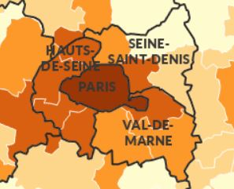
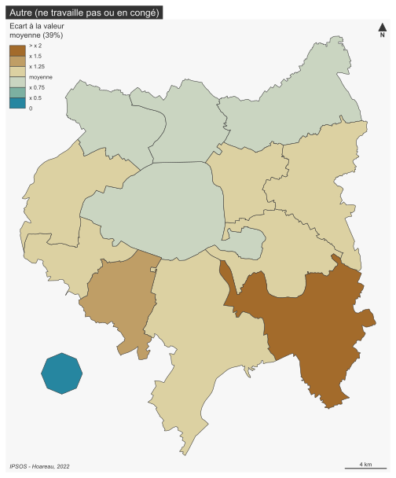
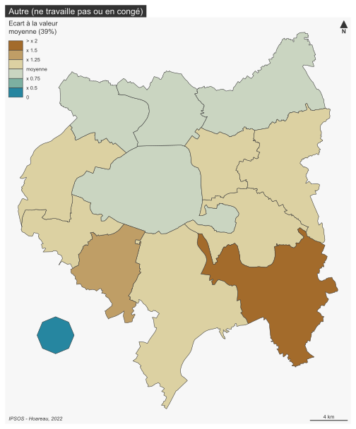

Paris

Répondants

Ci-dessus, on retrouve la répartition des répondants selon la commune dans lesquels ces derniers habitent. Plusieurs constats peuvent alors être soulevés. D’une part, il est important de souligner que pour la Ville de Paris, aucune information sur les arrondissements n’est présentée. De plus, on remarque que l’espace d’étude ne se résume pas uniquement aux limites du Grand Paris mais présente des communes de la Grande Couronne de l’Île-de-France. Enfin, hormis pour la Ville de Paris, on peut se dire qu’une analyse à l’échelle de la commune ne serait pas pertinent, notamment du fait du faible nombre d’enquêtés à cette échelle. Afin de pouvoir apporter une analyse géographique plus cohérente, le choix a donc été fait d’agréger les enquêtés en fonction des Établissements Publics Territoriaux (EPT) du Grand Paris et de regrouper les communes hors de ce dernier dans un seul polygone pour une certaine cohérence graphique.

Pour la répartition des répondants, elle est assez inégale d’un point de vue spatial, notamment du fait que la moitié des répondants soient à Paris et que le reste des 502 répondants sont répartis entre les 12 entités restantes. Cependant, au vue de la population de chaque EPT cela reflète relativement une répartition effective des répondants à l’enquête.
Enjeux selon les enquêtés
“Q1A. What would you say is the most important issue facing Paris/votre commune today?”
Le principal enjeu pour l’ensemble des EPT est la Covid-19. Afin d’aller un peu plus loin pour cette question, il est alors intéressant de regarder la 2è réponse la plus choisie selon les EPT. On se retrouve alors avec une plus grande hétérogénéité dans les réponses, et cela malgré le faible nombre d’objets géographiques en présence (13 pour 8 réponses différentes)

La vie dans son quartier pendant la Covid
“Q22A. How important, if at all, do you think it is that
people living in Paris/votre commune have access to all of the local
facilities they need within their local area, that is the area within
15-20 minutes’ walking distance from their home?”
Cette question, se refère à la question de l’hyper-proximité (avoir accès à tous les services essentiels a moins de 20 min à pied de son domicile). Selon l’enquête réalisée sur le sol francilien, une très grande majorité des enquêtés pensent que cette notion est importante. Ils sont en effet 90% à penser cela, contre 7% à penser le contraire.

La carte ci-dessus tend à prouver une certaine homogénéité territoriale pour l’importance de l’hyper proximité puisqu’en effet, l’ensemble des EPT ont une valeur proche de la moyenne de l’espace étudié. Les deux cartes ci-dessous montrent les résultats obtenus pour l’indiférence ou la non importance de cette question. On retrouve alors de gros écarts entre certains EPT, causés principalement par le faible nombre de répondants qui accentue l’effet “d’extrême”. Parler du fait que le covid et les confinements ont fait qu’on devait vivre a 1km de chez soi, renforcer ce sentiment d’avoir tout à proximité (cf. IPR)


Quitter les grandes villes après le Covid ?
“Q14A. How likely, if at all, is it that you will move
out of Paris/votre commune in the next five years?”


Immigration
Cette partie traitera des questions migratoires dans le Grand Paris.
“Q26. Thinking now about immigration to Paris/votre
commune, to what extent do you agree or disagree with the following
statements? - Immigration from outside of France has had a
positive impact on Paris/Ma commune”
Pour la question de l’impact positif qu’a l’immigration venant d’hors de France, on retrouve environ un tier des répondants pour les réponses proposées (les réponses “Neutre” et “Ne sait pas” ont été rassamblées pour faciliter la lecture).


Avec ces trois cartes, on remarque principalement que Paris, les communes hors du grand paris et l’EPT Boucle Nord Seine sont assez convaincu par le fait que l’immigration venant de l’étranger a un impact positif. A contrario, l’EPT Grand Sud Est Avenir, semblent contre cette idée. Les EPT Grand Orly Seine Bièvre et Paris-Marne-Est et Bois tendent a plus de neutralité vis-à-vis de cette question.
“… Immigration from elsewhere within France has had a positive impact on Paris/Ma commune”
Pour la question de l’impact positif qu’a l’immigration venant d’ailleurs en France, environ la moitié des répondants sont neutres ou ne savent pas (48%), un tier (34%) pensent qu’elle a un impact positif, et le reste (18%) pensent le contraire.


On peut soulever le fait que la Ville de Paris reste assez neutre quant à cette question mais tend à dire que l’immigration venant d’ailleurs en France a un impact positif.Les EPT situés au Nord, au Nord-Ouest et à l’Est du territoire du Grand Paris semblent quant à eux plutôt en désaccord avec cette idée.
“I think Paris/Ma commune needs more immigration than the present level”
Pour cette question, une majorité des répondants (52%) pensent qu’il ne faut pas plus d’immigration dans leur commune. A l’opposé, seulement 15% des enquêtés pensent qu’il faut plus d’immigration dans leur commune.


Les EPT à l’ouest de Paris et l’EPT Grand Paris Sud Est Avenir tendent à confirmer la tendance général puisqu’ils sont clairement en défaveur d’une augmentation de l’immigration. A contrario, les EPT Est Ensemble, Boucle Nord de Seine et les communes hors du Grand Paris pensent assez nettement qu’il faut plus d’immigration. Le reste des EPT semblent être assez neutre à cette question, ou du moins présentent un équilibre entre les réponses positives, neutres et négatives.
Sécurité
“Q33. How safe do you feel walking alone in your local area… Day“
L’immense majorité des répondants se sentent en sécurité la journée dans leur quartier. Avec les cartes présentés ci-dessous on note cependant que l’EPT Plaine Commune présente une immense majorité de réponses négatives.


… at Night”
En opposition avec la journée, on retrouve une perte du sentiment de sécurité la nuit dans les quartiers des répondants puisqu’on passe de 84% en journée à 52% la nuit. On retrouve cependant le sentiment d’insécurité à Plaine Commune et à Est Ensemble. Les EPT de l’Ouest se sentent quant à eux davantage en sécurité en comparaison avec l’ensemble de l’espace étudié (là où il y avait une relative homogénéité en journée).


Logement, travail et vie de famille
|  |  |
Figure 1 : Prix moyen au m² des appartements (2020) en IDF
Source : cartoviz.institutparisregion.fr
La figure 1 est présentée dans le but d’apporter quelques éléments de compréhension quant aux résultats qui seront présentés ci-dessous. Elle montre le prix moyen au m² des appartements en 2020. Pour donner deux exemples de lecture, la Ville de Paris (le plus cher) possède un prix au m² moyen d’environ 11 000 € et l’EPT Paris Terres d’Envol (le moins cher) d’environ 2 900 €.
***“Q11B. Thinking now about living in Paris/votre commune, to what
extent do you agree or disagree with the following statements?*** -
L’immobilier dans ma commune est abordable pour les gens
comme moi .”
Une majorité des répondants (52%) pensent que leur commune n’offre pas des logements abordables pour les gens partageant le même profil qu’eux. Ce sentiment est légèrement plus présent au sein de la Ville de Paris et les EPT Boucle Nord de Seine, Est Ensemble et Grand Paris Seine Ouest. A contrario l’EPT Grand Paris Sud Est Avenir et les communes hors du Grand Paris ont davantage le sentiment que leur commune est abordable pour les gens comme eux.


“….L’accès à la propriété
est trop cher pour les gens comme moi”
La question de l’accès à la propriété a un résultat plus tranché puisque 76% des répondants pensent qu’il est trop cher selon leur profil. Il s’agit d’un sentiment qu’on retrouve unanimement sur le territoire de l’enquête puisque l’ensemble des EPT, à l’exception des communes Hors du Grand Paris, présentent des résultats proche de la moyenne de l’espace d’étude. Les répondants hors du Grand Paris semblent même dire que l’accès à la propriété est abordable pour les gens comme eux. Un sentiment logique compte tenu de prix de l’immobilier inférieur qu’en petite couronne.


“QD12. Which of these best describes your current working arrangements?”

 

Si le télétravail est une pratique de plus en plus courante, tout le monde n’est pas mis sur même un pied d’égalité vis à vis de cette pratique, notamment du fait de la vie de famille ou de la disposition des logements. Parmi l’ensemble des répondants, 40% ont la possibilité de travailler depuis chez eux. A contrario, 21% ne peuvent pas être en télétravail. Géographiquement parlant, le constat est net : les EPT au Nord du Grand Paris ont moins la capacité de télétravailler que le reste du territoire, notamment Paris, les communes Hors du Grand Paris et les EPT de l’Ouest. En prenant l’exemple de l’EPT Plaine Commune, majoritairement composé de communes populaires (Ribardière 2018), les ménages travaillent en tant qu’ouvriers et employés, or il s’agit de professions n’offrant pas la plupart du temps la possiblité de télétravailler. On peut également penser qu’à cela s’ajoute la composition du foyer (familles nombreuses ou monoparentales dans des logements non-adaptés). Il faut également noter la présence marquée sur la première carte de l’EPT Grand Paris Sud Est Avenir qui peut être interprêté comme un espace où l’on ne télétravaille pas, alors qu’il s’agit plutôt d’un espace où les enquêtés ne travaillent pas (ou sont en congés). https://www.institutparisregion.fr/nos-travaux/publications/conditions-de-vie-et-aspirations-des-franciliens-en-2021/
Rebondir après la pandémie
Cette série de question a pour objectif de montrer l’optimisme des parisiens après la pandémie vis à vis de différentes thématiques.
Transports publics
Pour ce qui est des transports publics, 45% des répondants pensent que la situation va rester identique après la pandémie, 35% qu’elle va s’améliorer, et 20% qu’elle va se détériorer.

Il est important de soulever que les EPT à l’ouest, au sud ouest et au sud semblent davantage optimistes vis à vis des transports publics, un sentiment qui peut, peut-être, se justifier par le Grand Paris Express et un meilleur accueil de ce dernier dans cette zone plutôt qu’au nord et à l’est de la capitale. Il faut également préciser que le nombre de répondants étant assez faible vis à vis de la population générale du Grand Paris, il est difficile de mesurer l’impact positif ou négatif du GPE du fait de l’éparpillement des répondants.


Abordabilité des
logements
Contrairement aux transports, 55% des répondants pensent que l’abordabilité des logements va se détériorer dans le futur, et seulement 12% des enquêtes sont optimistes. Ce qui flagrant est le grand pessimisme et le très faible optimiste que l’EPT Grand-Orly Seine Bièvre, en opposition avec Paris Ouest La Défense ou l’Hors Grand Paris.


Opportunités
d’emploi
On retrouve environ 1/3 des répondants pour chaque réponse vis à vis de l’avenir des opportunités d’emploi, avec un pessimisme légèrement plus présent (26%). La Ville de Paris et les EPT du Nord semblent plus tendre vers un optimisme, contrairement au Sud, est surtout à l’Est, qui sont plus pessimistes vis à vis de cette question. On peut transposer cette logique avec les nombreux travaux encourageant le développement économique au nord et aux alentours de la Défense


Niveaux de
pollution
La question de la gestion des niveaux de pollution est au coeur des politiques des villes aujourd’hui. Pourtant, seulement 18% de l’ensemble des enquêtés semblent optimistes vis à vis de cette question. La ville de Paris semble d’ailleurs particulièrement optimiste, contrairement aux EPT présents au Sud et à l’extrême est du Grand Paris.


Cutlure
Si 41% des répondants pensent que la situation des lieux de cultures va rester identiques, 35% pensent qu’elle va s’améliorer et 24% pensent qu’elle va se détériorer dans les prochaines années. La Ville de Paris présente d’ailleurs des résultats proches de la moyenne dans toutes les réponses possibles, comme une majorité d’EPT.


Services publics
1/3 des répondants pensent que les services publics vont se détériorer, un sentiment particulièrement présent à l’est du Grand Paris. Il est intéressant de préciser que l’EPT Grand Paris Seine Ouest possède à la fois une grande part de répondants optimistes et pessimistes. Au nord, les EPT tendent à dire que les services vont rester à l’identique. Le terme “services publics” étant assez large, il aurait peut être fallu différencier les services publics (notamment accès à la santé mis à mal par la crise Covid), et pourquoi pas en faire une catégorie de question à part entière.


Dans l’ensemble, la Ville de Paris semble assez optimiste vis à vis de l’avenir, tout comme les EPT présents à l’Ouest (qui ont pour réputation d’accueillir une population plus aisée). Le reste du territoire francilien présente davantage de contrastes, mais dans l’ensemble un optimiste général semble se dessiner. Certains EPT offrent davantage de réponses pessimistes, on peut citer l’exemple de l’EPT Grand-Orly Seine Bièvre notamment.
)